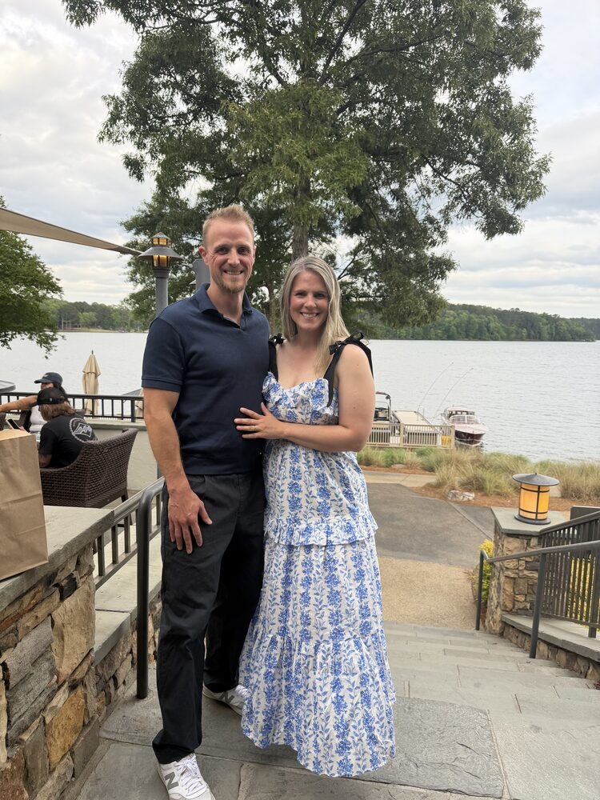

Our story
For nearly two decades we've given ourselves to full-time ministry — evangelism, discipleship, pastoring, leadership, missions, and now church planting as part of a church-planting cohort in Atlanta. Since around 2007, our lives have been woven into the GateCity Church family here in the city.
Andrew has served in most of the roles a church can hold. He built an evangelism training program that equipped hundreds of people — many of whom went on to share the gospel with thousands on college campuses and across Atlanta — and has taught in the School of Ministry on subjects like evangelism, the Kingdom of God, and prayer and worship. Along the way he has led in worship, prayer, and production, including years directing GateCity's long-running prayer room. Today he serves as Executive Pastor of GateCity Buckhead, a growing church plant in the heart of Atlanta — carrying both its spiritual and practical life: pastoral care, preaching and teaching, team and organizational leadership, operations, systems, and finance.
Ashley serves with Send56 in donor care and administration, strengthening global missions behind the scenes — overseeing the relationships, details, and communication that make long-term mission work possible. In earlier seasons she served as an executive assistant and as a leader in prayer, worship, and missions.
We're raising three children — Lily, Amy, and John Micah — and building a home we pray is marked by worship, hospitality, generosity, and adventures with God. Ministry has never been a job description for us; it's the life our family lives together — an adventure with God, and a risk we've chosen because we believe life extends far beyond what we can see in the moment. We want our lives built around prayer, the presence of God, the gospel, and multiplying disciples to the ends of the earth.
And we sense there's more ahead. We're prayerfully discerning future church plants — carrying what we've learned about pastoring, discipleship, and healthy church life to communities that need it. Now in our 40s, we'd count it a joy to give the next decade or two fully to church planting, gospel planting, and multiplying disciples.
